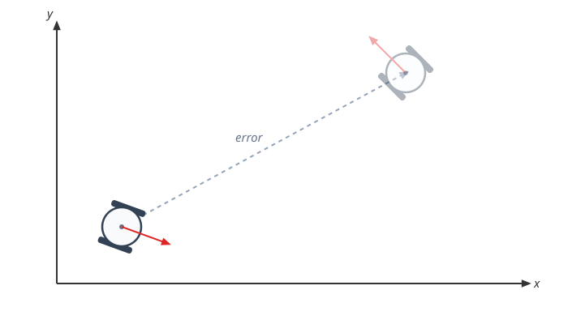
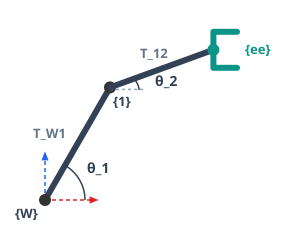
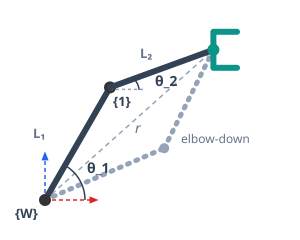
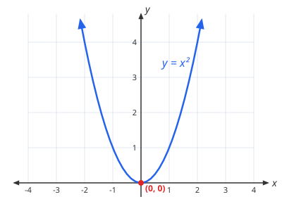
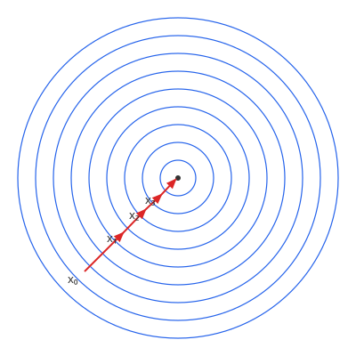
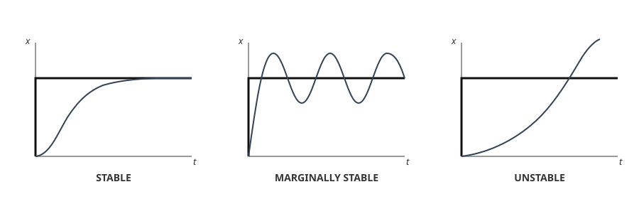
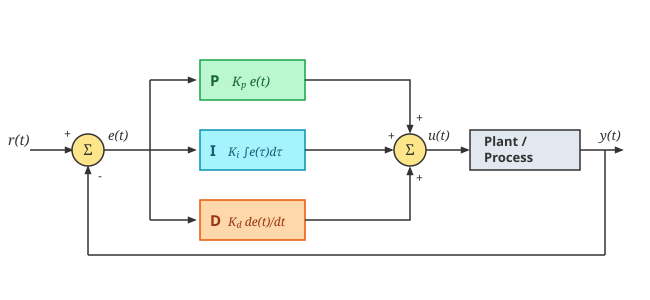
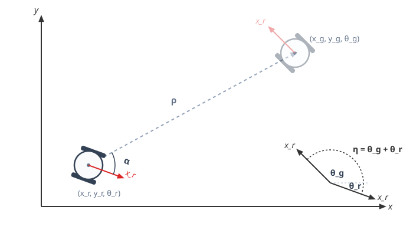
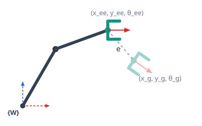

Part III: Kinematics and Trajectory Control
Once we know where the robot is, we use control algorithms to move it to a goal. This is treated as an optimization problem: we want to minimize a error.
Defining the Error
Before a robot can move toward a goal, it needs to know exactly how "wrong" its current pose is. The error is just the difference between the robot's current pose and its goal pose, and driving a robot to its goal really just means minimizing this error.

Before we can actually reduce this error, we first need a few building blocks: forward kinematics (how actuator values map to pose), holonomy (what kinds of motion a robot can and can't do), inverse kinematics (going the other way, from a target pose to actuator values), and differential kinematics (the same relationships, one derivative up, in velocity).
Forward Kinematics
Forward kinematics is where a robot ends up, given its actuator values. Odometry, from the previous lecture, is a special case of this.
A two wheeled mobile robot only has 2 of 6 possible degrees of freedom — translation along \(X_R\) and rotation around \(Z\):

\(r\) is the wheel radius and \(d\) is the distance between the two wheels.
Rotating it by the robot's current heading \(\alpha\) and adding it to the previous pose gives its actual position in the world:
A robot arm's forward kinematics works the same way, just with a different actuator: each joint angle contributes a rotation followed by a fixed translation along the link to the next joint. Finding the end-effector's position is the same frame-chaining problem from spatial representation, applied once per joint:

Each \(T^{i-1}_i\) is a rotation by the joint's own angle \(\theta_i\), then a fixed translation of length \(L_i\) (the link) along the rotated axis. For the 2-link arm:
Only \(\theta_i\) changes as the joint rotates, \(L_i\) is fixed by the arm's geometry. Multiplying the two matrices out:
The rotation part collapsed to \(\theta_1+\theta_2\) because chaining two rotations just adds their angles. Reading the translation column straight off this matrix gives the end-effector's pose directly in the world frame:
Holonomic vs. Non-Holonomic Motion
The two forward kinematics above behave differently in an important way, whether a closed loop in joint space also closes the loop in the workspace:
-
Arm (holonomic): the end-effector's pose depends only on the current joint angles \(\theta_1, \theta_2\). Move the joints along any path and return them to their starting angles, and the end-effector is guaranteed to be back at its starting pose too.
-
Mobile robot (non-holonomic): drive the wheels around and return them to their original rotation, and the robot won't generally be back at its starting position. The world pose depends on the path taken, not just the final wheel angles.
This difference makes us calculate the error differently. The arm can move freely in any direction, so the error vector can simply be:
The mobile robot can't move that freely, so its error instead has to be expressed in polar terms — a distance \(\rho\), a direction \(\alpha\), and a heading error \(\theta_e\) — which we'll define properly once we get to building its controller:
Inverse Kinematics
Forward kinematics answers "given these actuator values, where does the end-effector end up?" Inverse kinematics asks the opposite question: given a target pose, what actuator values get us there?
The mobile robot doesn't get a closed form: it's non-holonomic, so there's no direct mapping from a target pose to wheel angles — the path taken matters, not just the endpoint. That's why the rest of this chapter builds its control at the velocity level instead.
The arm, being holonomic, doesn't have that problem: given a target end-effector position \((x_{ee}, y_{ee})\), the base-to-target distance is:
\(r\), \(L_1\), and \(L_2\) form a triangle, so the law of cosines gives the elbow angle directly:

The \(\pm\) isn't a rounding artifact, it's two genuinely different, equally valid configurations reaching the same point: elbow up or elbow down. Once \(\theta_2\) is picked, \(\theta_1\) follows directly:
This closed-form solution only works for exactly 2 joints. Add a third and the arm becomes redundant — infinitely many configurations reach the same target, so there's no single triangle to solve. Therefore, we also need a velocity-based solution.
Differential Kinematics
Forward kinematics relates actuator values to pose. Differential kinematics looks at the same relationship one derivative up: instead of position, we're relating velocities.
Applying this to the mobile robot: replace each incremental step (\(\Delta x\), \(\Delta\omega_z\), \(\Delta\phi_l\), \(\Delta\phi_r\)) with its derivative, and the odometry formulas from earlier become a velocity relationship instead:
\(x\) is distance, \(\dot x\) is speed (You'll also see this written as \(x'\)). \(\dot\phi_l\) and \(\dot\phi_r\) are just the wheels' angular velocities instead of a single timestep's rotation.
Inverse Differential Kinematics: We can also go the other way, solving those same two equations for \(\dot\phi_l\) and \(\dot\phi_r\), to find the wheel velocities that produce a desired \(\dot x\) and \(\dot\omega_z\):
The Jacobian Matrix
We can generalize the previous idea for systems with more actuators. In multi-degree-of-freedom systems, the simple 1D derivative is replaced by the Jacobian Matrix (\(J\)), which contains all the partial derivatives of the robot's kinematics. It relates a vector of actuator velocities \(\dot q\) to the resulting task-space velocity \(\nu\):
The mobile robot's actuators are its two wheel velocities, \(\dot q = [\dot\phi_l, \dot\phi_r]^T\). Writing out the partial derivatives of the odometry gives:
The middle row is zero — no combination of wheel velocities can move the robot along \(y_R\) instantaneously. Dropping that always-zero row leaves the final relationship:
That's the differential-kinematics version of the non-holonomic constraint from earlier — exactly the \(\dot x\), \(\dot\omega_z\) relationship derived above.
The arm's actuators are its two joint velocities, \(\dot q = [\dot\theta_1, \dot\theta_2]^T\). Writing out the partial derivatives of the forward kinematics gives:
Unlike the mobile robot's, there's no row to drop here — all 3 rows carry real information about the end-effector's pose.
Inverting the Jacobian
To go the other way — from a desired task-space velocity to the actuator velocities that produce it — invert \(J\). For a general \(2\times2\) matrix:
Applying this to the mobile robot's Jacobian:
This recovers the same \(\dot\phi_l\), \(\dot\phi_r\) from Inverse Differential Kinematics above.
Unlike the mobile robot's, the arm's \(J\) isn't square — 3 task-space dimensions (position + orientation) but only 2 joints — so it can't be inverted the same way. Instead of a plain inverse, it uses the pseudo-inverse:
Applying this to the arm's Jacobian:
We'll use this Jacobian-based control law to actually reduce the error and reach a goal.
Minimizing Error
At the beginning of this lecture, we defined a robot's error as the difference between its current pose and the goal pose it needs to reach. Driving the robot to its goal is really just minimizing this error function, and the technique we'll use to do it is gradient descent.
Take the simplest possible error function, \(y = x^2\): its minimum sits at \(x=0\), and its derivative at any point tells us which way is downhill.

Stepping opposite that derivative, a little at a time, always walks you toward the minimum — no matter which side you started on. With more variables, this becomes stepping opposite the full gradient, sliding down toward the center of the error function's contours:

This is the exact technique we'll use to build the robot's controller below: measure the error, step opposite its gradient, and repeat until it reaches zero.
Gradient Descent
In discrete time, this stepping process becomes an update rule: at each timestep \(k\), nudge \(x\) opposite the derivative, scaled by a gain \(L\) that controls how big each step is:
For multiple actuators \(q\), using the Jacobian from earlier, \(f'(x)\) becomes \(J^+e\), giving us the general control law:
How \(\Delta q\) is applied depends on what the controller accepts.
Position-controlled servo (arm joint):
because \(\Delta q\) is a position increment.
Velocity-controlled motor (e.g. wheel): use a velocity command instead:
That gain \(L\) is what determines whether the controller actually converges. Given a step input to track, the response can look very different depending on how it's tuned:

- Stable — the error settles at zero, either smoothly or with some decaying oscillation on the way there.
- Marginally stable — the error keeps oscillating around zero forever, never quite settling.
- Unstable — the error grows without bound, either steadily or through ever-larger oscillations. A gain that's too large is a common cause of this.
So far, \(L\) has just been a single fixed number. PID Control below expands that into three separate terms instead of one constant.
PID Control
The controller derived above is a pure Proportional (P) controller — the control signal is proportional only to the current error. In general, a control signal can be made up of three terms:
- P — proportional to the current error.
- I — proportional to the integral of past errors.
- D — proportional to the derivative of the error.

In practice, the integral term is computed by summing up just the last \(N\) error terms rather than the entire history, to prevent wind-up — a large accumulated error continuing to push the controller long after it's no longer relevant. The derivative term reacts to how fast the error is changing, which increases the speed of convergence.
Examples in Practice
Mobile Robot Controller
For the mobile robot, that error breaks down into three components: a distance to cover, a direction to face to get there, and a final heading to end up at.

Distance (\(\rho\)) is the straight-line distance to the goal, direction (\(\alpha\)) is the angle the robot needs to turn to face the goal relative to its current heading, and heading error (\(\theta_e\)) is how far off the robot's final orientation is from the goal's:
Ignoring \(\theta_e\) for simplicity, the error vector is just \(e = [\rho, \alpha]^T\).
Applying the general control law from earlier for a velocity-controlled actuator, \(\dot q = -LJ^+e\), with \(q = [\phi_l, \phi_r]^T\) and the mobile robot's own inverse Jacobian:
Multiplying this out:
Let the gain be negative, \(L = -k\) with \(k > 0\). Substituting that it gives:
Renaming \(\frac{k}{r} \to p_2\) and \(\frac{kd}{2r} \to p_1\) lines these up exactly with the code below: \(\dot\phi_l\) and \(\dot\phi_r\) are the wheel speeds sent straight to the motors.
Code:
p1 = 3.14
p2 = 6.28 * 2
rho = np.sqrt((xw - target_x)**2 + (yw - target_y)**2)
alpha = np.arctan2(target_y - yw, target_x - xw) - theta
leftwheel = -p1 * alpha + p2 * rho
rightwheel = p1 * alpha + p2 * rho
Every control loop iteration just repeats these three steps: measure the error, step opposite its gradient, convert to wheel speeds, and move.
Robot Arm Controller
The exact same logic applies to the 2-link arm — just with its own error and its own Jacobian from earlier.
Error is the difference between the goal pose and the end-effector's current pose:

Applying the control law with the arm's own Jacobian \(J\) and its pseudo-inverse \(J^+\) (since \(J\) isn't square):
Final output — the arm's servos take an absolute angle rather than a speed, so \(\Delta q\) gets accumulated into each joint angle every iteration:
Code:
e = np.array([xg - xee, yg - yee, thetag - thetaee])
J = np.array([[-L1*np.sin(theta1) - L2*np.sin(theta1+theta2), -L2*np.sin(theta1+theta2)],
[ L1*np.cos(theta1) + L2*np.cos(theta1+theta2), L2*np.cos(theta1+theta2)],
[1, 1]])
deltaQ = -np.linalg.pinv(J) @ e
theta1 = theta1 + deltaQ[0]
theta2 = theta2 + deltaQ[1]